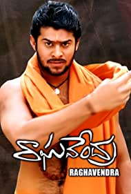
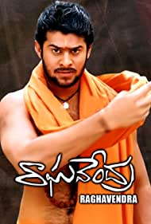
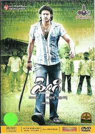
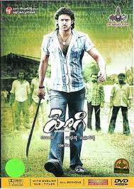
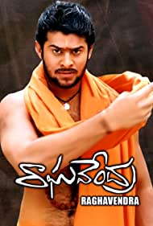
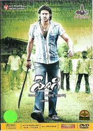
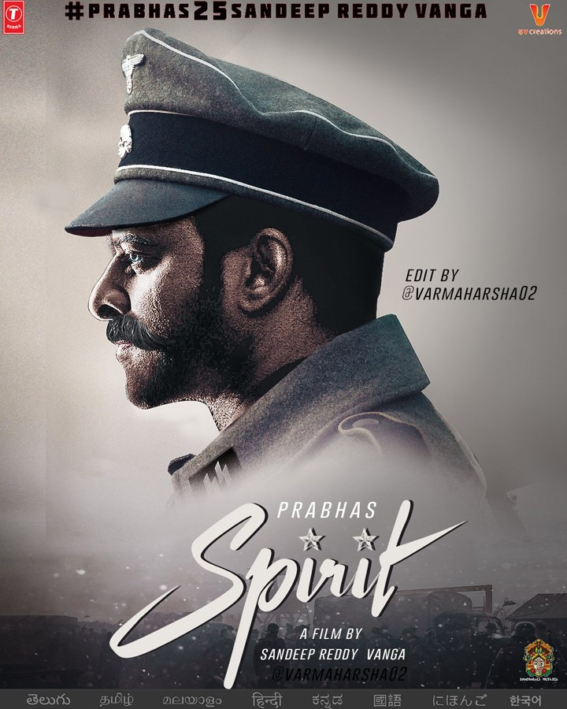
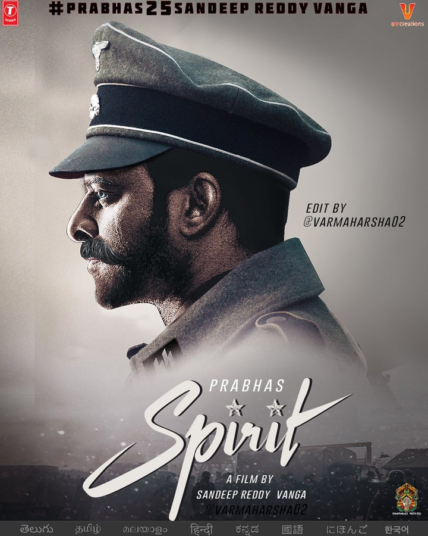

 



Uppalapati Venkata Suryanarayana Prabhas Raju (born 23 October 1979), known mononymously as Prabhas, is an Indian actor who predominantly works in Telugu cinema. One of the highest-paid actors in Indian cinema, Prabhas has featured in Forbes India's Celebrity 100 list three times since 2015 based on his income and popularity. He has received seven Filmfare Awards South nominations and is a recipient of a Nandi Award and a SIIMA Award.
Prabhas made his acting debut with the 2002 Telugu drama Eeswar, and later attained his breakthrough with the action romance Varsham (2004). His notable works include Chatrapathi (2005), Bujjigadu (2008), Billa (2009), Darling (2010), Mr. Perfect (2011), and Mirchi (2013). He won the Nandi Award for Best Actor for his performance in the lattermost.[8][9] In 2015, Prabhas starred in the title role in S. S. Rajamouli's epic action drama Baahubali: The Beginning, which is the fourth-highest-grossing Indian film to date. He later reprised his role in its sequel, Baahubali 2: The Conclusion (2017), which became the first Indian film ever to gross over ₹1,000 crore (US$155 million) in all languages in just ten days, and is the second-highest-grossing Indian film to date.
In addition to acting in films, Prabhas is also the brand ambassador for the Mahindra TUV300. He is the first Telugu actor to receive a wax sculpture at Madame Tussaud's wax museum.




 

One of the highest-paid actors in Indian cinema, Prabhas has featured in Forbes India's Celebrity 100 list three times since 2015 based on his income and popularity. He has received seven Filmfare Awards South nominations and is a recipient of the Nandi Award and the SIIMA Award.
Learn more